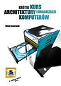
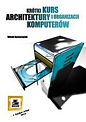

Literatura
 

Metzger P. - Anatomia PC, wydanie XI
Wojtuszkiewicz K. - Urządzenia techniki komputerowej, część I: Jak działa komputer
Wojtuszkiewicz K. - Urządzenia techniki komputerowej, część II: Urządzenia peryferyjne i interfejsy
Komorowski W. - Krótki kurs architektury i organizacji komputerów
Gook M. - Interfejsy sprzętowe komputerów PC